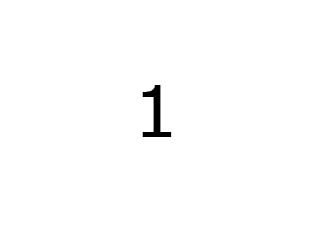

<input id="tm" type="text" name="timec" value="100" onchange="ref()">Frame delay<Br>
<input id="cnt" type="text" name="filesc" value="18">Number of images<Br>
<input id="delay" type="text" name="delay" value="2">Start delay<Br>

</img>
<div id="fln"></div>
<script type="text/javascript">

    var i = 1;
    var ps = 1;
    var d = document.getElementById('delay');


    setTimeout(function() {
    function draw() {
        if (ps == 1) {
            i = i + 1;
            if (i > document.getElementById('cnt').value) i = 1;
            document.getElementById('im').src = 'img/' + i + '.jpg';
            document.getElementById('fln').innerHTML = '';
        }
        else document.getElementById('fln').innerHTML = 'img/' + i + '.jpg';
    }

    var timerId = setInterval(draw(), document.getElementById('tm').value);


    function Timer(fn, t) {
        var timerObj = setInterval(fn, t);

        this.stop = function () {
            if (timerObj) {
                clearInterval(timerObj);
                timerObj = null;
            }
            return this;
        }

        this.start = function () {
            if (!timerObj) {
                this.stop();
                timerObj = setInterval(fn, t);
            }
            return this;
        }

        this.reset = function (newT) {
            t = newT;
            return this.stop().start();
        }
    }

    var timer = new Timer(function () {
        draw();
    }, document.getElementById('tm').value);


    }, d.value*1000);

    function ref() {
        timer.reset(document.getElementById('tm').value);
    }

    function pause() {
        ps = ps * (-1);}


</script>
  